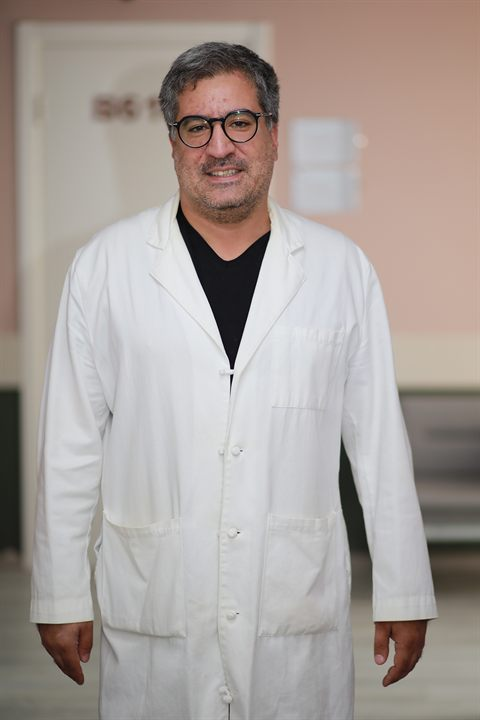
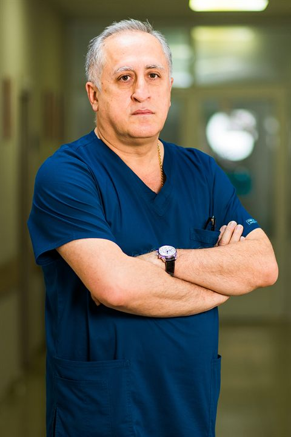

Лечение простаты и мужского здоровья в Тбилиси — за одну поездку и без лишних операций
Вас ведёт один врач — уролог Александр Бочоришвили, член Европейской ассоциации урологов. Он сам смотрит анализы, ставит диагноз и, если нужно, сам оперирует. Цену называем заранее и фиксируем в договоре — доплат на месте не будет.
Какая программа вам подойдёт?
Выберите вариант — покажем подходящую программу, сколько дней она займёт и сколько стоит.
Медсестра возьмёт анализы прямо в отеле. Затем — УЗИ простаты и сосудов, проверка мочеиспускания и подробная консультация д-ра Бочоришвили. Вы уедете с диагнозом и понятным планом лечения.
Урология в Тбилиси: обследование и операция в двух ведущих клиниках Грузии, у одного врача
Обычно при лечении за границей анализы делают в одном месте, оперируют в другом, а врачи между собой не общаются. У нас обе клиники работают в связке, и вас ведёт один хирург. Не нужно сдавать анализы дважды и пересказывать историю болезни заново.
CITO Medical Center — всё обследование за один день
Первая в Грузии лаборатория с американской аккредитацией качества. Её анализы принимает Посольство США. Результаты — уже на следующее утро.
Медсестра приедет к вам в отель в день прилёта и возьмёт кровь и мочу.
УЗИ простаты на аппарате экспертного класса с искусственным интеллектом, проверка сосудов и мочеиспускания.
Госпиталь PINEO — операции без разрезов
Работает круглосуточно. В 2026 году получил высший уровень канадской аккредитации Platinum — такой статус есть только у 9 клиник Грузии.
- Операции без разрезов. Лазерное лечение аденомы и удаление камней через естественные пути.
- Канадские стандарты безопасности и стерильности в операционной и палатах.
- Палаты как в отеле. Можно жить вместе с близким человеком.
Удаление аденомы простаты лазером (HoLEP, ТУР) и дробление камней в почках
Операции проходят без разрезов, домой из больницы — через 1–3 дня. Все расходные материалы уже в цене: никаких отдельных счетов «за лазерное волокно» потом.
Лазерное удаление (HoLEP) или операция через уретру (ТУР) — при любом размере простаты.
Дробим лазером через естественные пути, крупные — через маленький прокол.
Рак простаты: точный диагноз, наблюдение или операция с сохранением нервов, которые отвечают за эрекцию и удержание мочи.
Лечение эректильной дисфункции и восстановление тестостерона без операции
Слабая эрекция — часто первый сигнал проблем с сосудами. Сосуды полового члена тонкие и, по данным исследований, начинают «сдавать» на несколько лет раньше сосудов сердца. Поэтому сначала мы проверяем сосуды, а затем подбираем лечение по европейским рекомендациям.
Разберёмся, что вас беспокоит
Ответьте на 5 коротких вопросов — покажем, какая программа вам подойдёт, и передадим ответы координатору.
Урологи в Тбилиси, которые принимают решения вместе
Сложный случай разбирает не один врач, а команда: уролог, онколог, специалист по УЗИ и нефролог.

Д-р Александр Бочоришвили
Уролог и онкоуролог, доктор медицины (PhD), член Европейской ассоциации урологов
- Сам консультирует вас в CITO и сам оперирует в госпитале PINEO
- 19 лет опыта: лазерные операции на простате, удаление камней, онкоурология, мужское здоровье
- Стажировался в Германии (Фрайбург), Италии (Неаполь) и Эстонии (Таллин)
- Говорит по-русски, по-английски и по-грузински — переводчик не нужен

Д-р Андро Дзнеладзе
Соучредитель госпиталя PINEO, доктор медицины (PhD)
- Больше 35 лет опыта в УЗИ и диагностике урологических и онкологических болезней
- Во время операции помогает хирургу: контролирует всё по УЗИ
- Автор около 20 научных работ
Член Европейской ассоциации урологов с 1997 года. Проверяет сложные онкодиагнозы и помогает решить, нужна операция или достаточно наблюдения.
Удаляет камни из почек и мочеточника лазером, оперирует аденому простаты без разрезов.
Руководит отделением нефрологии и трансплантации почки. Следит, чтобы операция не навредила работе почек.
После лечения вы получите выписку и результаты анализов на русском и английском. Их можно показать своему врачу и отправить в страховую компанию.
Вы знаете цену, врача и план лечения ещё до покупки билетов
Цена «под ключ» прописана в договоре, вас ведёт один врач от консультации до выписки, анализы берём в отеле в день прилёта, а с врачом вы говорите без переводчика.
Три программы с понятной ценой
Цену фиксируем в договоре до того, как вы купите билеты. Не будет доплат за сложный случай, большой размер простаты или за то, что вы иностранец.
Обследование и второе мнение
Подойдёт, если вам за 40 и пора проверить здоровье, беспокоит мочеиспускание или вам предложили операцию и вы хотите понять, нужна ли она.
- Анализы в отеле — медсестра приедет в день прилёта
- ПСА (онкомаркер простаты), гормоны, сахар и холестерин
- УЗИ простаты, УЗИ сосудов, проверка мочеиспускания. Врач посмотрит ваши прежние снимки КТ или МРТ
- 2 консультации д-ра Бочоришвили: диагноз и план лечения
- 2 ночи в отеле 4* в центре, встреча в аэропорту, все поездки по городу и координатор на связи
Лечение эрекции и тестостерона без операции
Подойдёт, если ослабла эрекция, снизились энергия и желание или есть проблемы с простатой, которые лечат без операции.
- Анализы на гормоны и УЗИ сосудов — находим причину
- 6 сеансов ударно-волновой терапии — помогает сосудам восстанавливаться
- PRP-терапия из вашей собственной крови и укрепление мышц тазового дна
- Личный план, как вернуть собственный тестостерон
- 5–6 ночей в отеле 4*, все поездки на процедуры, координатор 24/7 и 2 месяца связи с врачом после возвращения домой
Операция под ключ
Подойдёт, если у вас аденома простаты, камни в почках или онкодиагноз и нужна операция.
- Обследование перед операцией за 1 день: анализы в отеле, ЭКГ, осмотр врача
- Операция без разрезов в госпитале PINEO. Лазер, расходники, наркоз и анализ удалённой ткани уже в цене
- Ваш случай обсуждают 5 специалистов: уролог, онколог, эндоуролог, специалист по УЗИ и нефролог
- 2–3 дня в палате-люкс с уходом по канадским стандартам
- 4 ночи в отеле 5*, трансферы на машине бизнес-класса, перевод выписки на русский и английский, 3 месяца связи с врачом онлайн
Авиабилеты в цену не входят. Всё остальное — лечение, проживание, трансферы и сопровождение — уже включено.
5 шагов: от первого сообщения до возвращения домой
Всю организацию берём на себя. Врач изучит ваши документы ещё до того, как вы купите билет.
Присылаете анализы
Отправьте в WhatsApp или Telegram результаты анализов, ПСА, снимки МРТ или КТ. Мы переведём их, врач посмотрит и предложит план и точную цену.
Встречаем и берём анализы в отеле
Встречаем в аэропорту и везём в отель. Медсестра приезжает прямо в номер и берёт кровь и мочу. Утром результаты уже у врача.
Консультация и обследование
Приём у д-ра Бочоришвили, УЗИ простаты и сосудов, проверка мочеиспускания. Врач ставит точный диагноз и объясняет, какое лечение нужно — и нужно ли оно вообще.
Лечение или операция
Операция без разрезов в госпитале PINEO — её проводит тот же врач, который вас консультировал. Или курс процедур без операции.
Выписка и связь с врачом
Контрольный осмотр, выписка на русском и английском, трансфер в аэропорт. Ещё 3 месяца врач на связи онлайн.
Ответы на частые вопросы
Цену, сроки и всё, что входит в программу, прописываем в договоре до покупки билетов.
Пришлите анализы — врач оценит их бесплатно
Оставьте контакты. Координатор напишет вам в WhatsApp или Telegram, поможет переслать анализы и снимки врачу и назовёт точную цену. Обычно отвечаем в течение 2 часов.